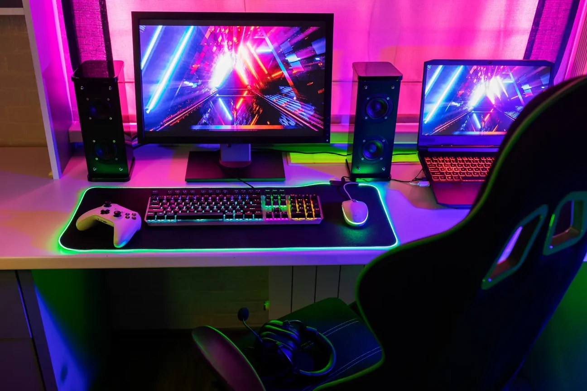

La evolución de la tecnología en los videojuegos
Los videojuegos han evolucionado gracias a los avances en procesadores, tarjetas gráficas y almacenamiento. Actualmente, los equipos permiten disfrutar mundos virtuales con mayor detalle, iluminación y rendimiento.
La inteligencia artificial, la realidad virtual y los gráficos avanzados continúan transformando la industria del entretenimiento digital.
Ver información tecnológica